{{newname}}
{{newocupacion}}
CONTACTO
{{newtelefono}}
{{newemail}}
{{newnacionalidad}}
linkedn/{{newname}}
IDIOMAS
Español: Nativo
Inglés: {{newingles}}
Francés: Intermedio(B2)
APTITUDES
{{newaptitudes}}
HABILIDADES
Acondicionamiento físico
Creacion videos deportivos
Pack office
Tenis
OTROS INTERESES
Creador de yincanas
Paseos ecologicos grupales
Lectura grupal en inglés
PERFIL
{{newfecha}} || {{newperfil}}
EXPERIENCIA LABORAL
Trabajador Social
México DF,
| 2022-Actualmente
Coordinador y mediador entre los equipos de ayuda psicologica a jovenes y niños en exclusion social.
Velar por la salud mental del equipo de ayuda psicologica a jovenes y niños en exclusion social.
Mepeo de necesidades estrategicas y logicas para las diferentes areas
Monitor de ejercicios fisicos para adolescentes.
Programar diferentes actividades extracurriculares en los involucrados.
Trabajador Social
México DF,
| 2020-2022
Funciones para seguimientos de casos para jovenes con problemas de adicciones.
Capacitaciones e integracion vinculadas a medidas preventivas.
Recopilacion de evidencias para auditorias y programas sociales.
Trabajador Social (Practicas)
Zaragosa,
España
| 2019-2020
Profesor de lengua española e inglesa para jovenes migrantes
Monitor de actividades ecologicas con adolescentes
Coordinador de actividades deportivas
FORMACION
Grado de Trabajador Social
ESMA,
Madrid
| 2012-2015
Licenciatura Profesional
Universidad de la frontera,
México DF
| 2011-2012